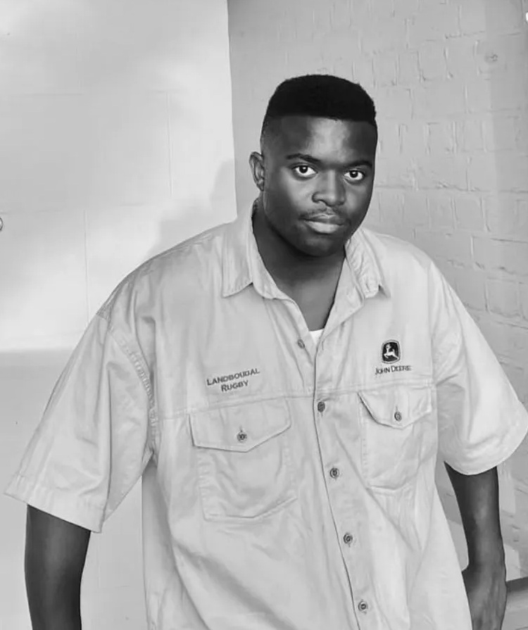

Nuvo Flooring
IT Technician
Maintained websites, managed domain registrations, troubleshot network and connectivity issues and built business workflow automations using Zapier.
Software developer &
digital product builder.
Curiosity into code.
Complexity into something useful.
I build software to make people's lives easier. I started with a marks calculator in high school. Now I turn ambitious ideas into practical digital products.
Professional experience across software development, IT operations and automation.
IT Technician
Maintained websites, managed domain registrations, troubleshot network and connectivity issues and built business workflow automations using Zapier.
Web Developer
Contributed to websites and software systems, including Book Trade, a community marketplace for students to exchange textbooks.
BSc IT / Software Development
Second year, part-time. Participated in a team hackathon building a student support platform connecting learners with educators.
Applications, systems and a published mobile game.

I didn't grow up with a laptop. I got my first one towards the end of Grade 11. That changed everything.
Born in the Democratic Republic of the Congo and raised in Kimberley, South Africa, I was curious about technology long before I owned a computer.
Outside technology, I enjoy watching and playing sports and serve as a small-group leader in my community. I am motivated by making things that genuinely help people.
Curiosity finally met the tools to explore it.
An NSC marks calculator for matric students.
Self-directed learning, a team hackathon and increasingly complex applications.
Join an ambitious team and contribute to meaningful software.
Technologies I work with and the projects where I use them.
JavaScript · HTML · CSS · React · Next.js · Java
Python · Flask · FastAPI · SQL · PostgreSQL · Supabase · SQLAlchemy · REST APIs
Git · GitHub · Cloudflare · DNS · Hosting · Zapier
Three.js · WebGL · GSAP · Responsive interfaces · Android game development
Understand the problem and the people affected.
Research, use AI-assisted brainstorming and consider architecture and alternatives.
Implement and integrate the pieces into something usable.
Test, debug, learn and improve the experience.
Available for full-time software development and IT roles. Remote preferred; open to relocation.